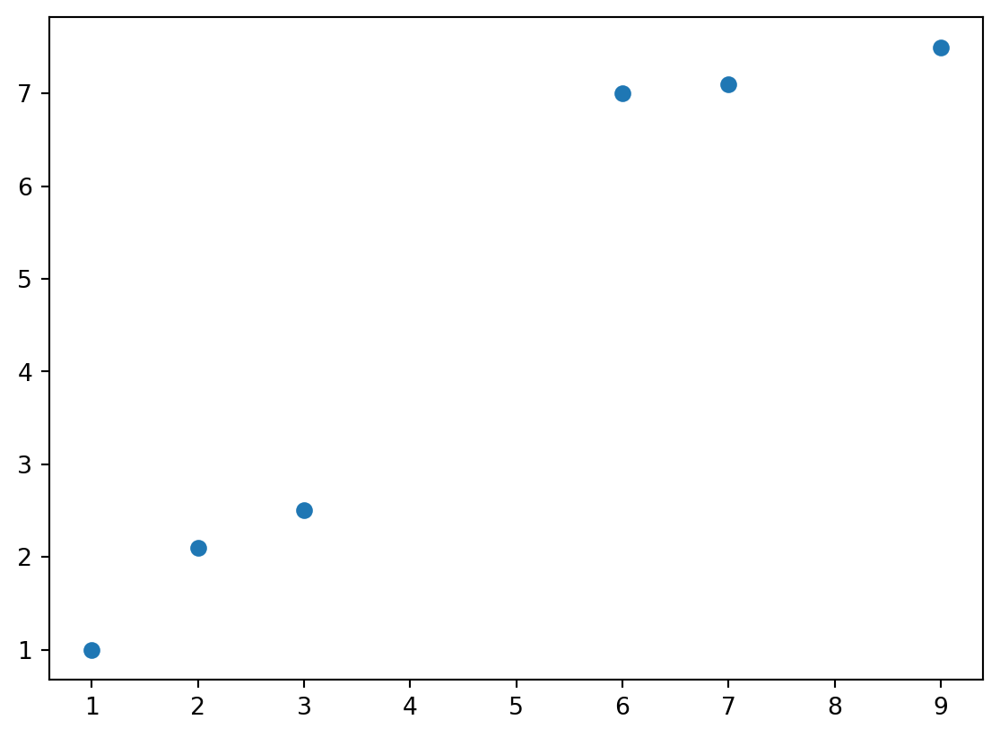

K-means Clustering
Setup points and K
we will implement a KNN algorithm to cluster the points

# Pure python implementation of K-means clustering
def knn_iter(X,centroids):
# set up new clusters
new_clusters=[[] for _ in range(len(centroids))]
# k=len(centroids)
# assign each point to the nearest centroid
for x in X:
k,distance=0,(x[0]-centroids[0][0])**2+(x[1]-centroids[0][1])**2
for i,c in enumerate(centroids[1:],1):
if (x[0]-c[0])**2+(x[1]-c[1])**2<distance:
k=i
distance=(x[0]-c[0])**2+(x[1]-c[1])**2
new_clusters[k].append(x)
# calculate new centroids
new_centroids=[[
sum([x[0] for x in cluster])/len(cluster),
sum([x[1] for x in cluster])/len(cluster)
] if cluster else centroids[i] for i,cluster in enumerate(new_clusters)]
return new_centroidsdef iter_and_draw(X,k,max_iter):
centroids=X[:k] # Randomly select 2 centroids
fig, axes = plt.subplots(max_iter//3+(1 if max_iter%3!=0 else 0),
3, figsize=(15, 10))
axes=axes.flatten()
for i in range(max_iter):
# Plot points and centroids
# Assign each point to nearest centroid and plot with corresponding color
colors = ['blue', 'green', 'purple', 'orange', 'brown', 'pink', 'gray', 'olive', 'cyan']
for j, x in enumerate(X):
# Find nearest centroid
min_dist = float('inf')
nearest_centroid = 0
for k, c in enumerate(centroids):
dist = (x[0]-c[0])**2 + (x[1]-c[1])**2
if dist < min_dist:
min_dist = dist
nearest_centroid = k
# Plot point with color corresponding to its cluster
axes[i].scatter(x[0], x[1], c=colors[nearest_centroid % len(colors)], label=f'Cluster {nearest_centroid+1}' if j==0 else "")
axes[i].scatter([c[0] for c in centroids], [c[1] for c in centroids], c='red', marker='*', s=200, label='Centroids')
axes[i].set_title(f'Iteration {i}')
centroids = knn_iter(X, centroids)
plt.tight_layout()
plt.show()
iter_and_draw(X,k,max_iter)
# print(centroids)
A question?
- What to do if one cluster has no assigned points during iteration?
Formula Derivation
The goal is to minimize the loss of inertia which is sum of the points to cluster centroids.
\[ Loss= \sum_{i=1}^n \sum_{x \in C_i} ||x-\mu_i||^2 \]
To iter \(\mu\) for each cluster, let us find the derivative of the following function. \[ f(\mu)=\sum_{i=1}^n ||x_i-\mu||^2 = \sum_{i=1}^n {x_i}^2+\mu^2-2x_i\mu \]
Given a \(\nabla \mu\), \[ f(\mu + \nabla \mu)=\sum_{i=1}^n ||x_i+\nabla \mu -\mu||^2 = \sum_{i=1}^n {x_i}^2+\mu^2+{\nabla \mu}^2-2{x_i \mu}-2{\mu \nabla \mu}+2{x_i \nabla \mu} \]
\[ f(\mu + \nabla \mu)-f(\mu)= \sum_{i=1}^n {\nabla \mu}^2-2{\mu \nabla \mu}+2{x_i \nabla \mu} \]
\[ \frac {f(\mu + \nabla \mu)-f(\mu)}{\nabla \mu}=\sum_{i=1}^n {\nabla \mu} -2 \mu +2{x_i} = 2\sum_{i=1}^n x_i - 2n\mu \]
Now we can see if \(n\mu = \sum_{i=1}^n x_i\), then the derivative is 0, this is why in each iteration, we need to set the center of the cluster as centroid.